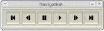

Manual do Usuário
|
|
|
Manual do Usuário |
O MUAN é uma ferramenta de apoio à construção de animações do tipo Quadro-a-Quadro. Através de uma câmera, ele recebe as imagens digitais com as quais a animação será construída. O princípio básico da criação de uma animação com o MUAN inicia-se com a captura de uma imagem pelo usuário. A imagem a ser capturada é mostrada no painel de imagens. Após a captura de um certo número de imagens, o usuário poderá reproduzir sua animação bem como editá-la. Por fim, a animação poderá ser salva no formato AVI e ainda carregada quando o usuário desejar.
A imagem abaixo mostra a tela principal do MUAN_OS. Ela consiste de 5 telas: Janela de Menu, Janela de Captura, Janela de Informações, Barra de Ferramentas Principal e Barra de Ferramentas Navegação.
Clique sobre um elemento na
imagem abaixo para ver a sua funcionalidade.
| Operações Disponíveis |
Menu Sistema
Menu Arquivo
Menu Exibir
Barras de Ferramentas
Menu Animação
Ir para
Menu Ajuda
| Descrição dos Elementos e Funcionalidades |
Janela principal da aplicação que contém o menu de operações do sistema. Se esta janela for fechada o programa termina.

Janela que contém o painel de imagens onde são exibidas as animações.
|
Importante: A barra de título desta janela indica o nome e o caminho do arquivo atual (onde está salvo). Dica: Quando o nome do arquivo estiver com * no final significa que o arquivo não está com as últimas atualizações salvas.
|

Mostra informações sobre a animação atual: número da captura atual, duração da captura atual, número do frame atual, número total de capturas e número total de frames.
Esta janela pode estar visível ou não de acordo com o menu Exibir - Janela de Informações.


Barra de Ferramentas Principal
Contém elementos para manipulação, edição e visualização da animação atual. Tais ferramentas permitem capturar imagens, configurar a duração de um frame, trabalhar sobre um intervalo de frames, flipar e ver a animação tela cheia e/ou tocando em loop.
Esta janela pode estar visível ou não de acordo com o menu Exibir - Barra de Ferramentas - Principal.


Barra de Ferramentas Navegação
Contém elementos para navegação na animação atual: ir para o primeiro, anterior, próximo ou último frame, ou ainda tocar/parar uma animação.
Esta janela pode estar visível ou não de acordo com o menu Exibir - Barra de Ferramentas - Navegação.


Menu Sistema - Memória/Câmera
Determina se as imagens mostradas no painel de imagens são oriundas da câmera ou da própria animação (memória). Quando no modo "Memória", indica que as imagens mostradas no painel de imagens são oriundas da animação. No modo "Câmera", indica que as imagens mostradas no painel de imagens são provindas da câmera.
Tecla de Atalho: CTRL+/
Importante: Se a câmera não estiver conectada ao computador ou estiver desligada, o aplicativo exibe uma mensagem e entra (ou continua) em modo "Memória".
Cria uma nova animação em branco, fechando qualquer animação em uso, caso esteja sendo usada.
Tecla de Atalho: CTRL+N
Dica: Antes de fechar a animação atual, o programa solicita a operação Salvar caso o arquivo esteja desatualizado.

Carrega uma animação previamente salva ou imagem do tipo RAS.
Tecla de Atalho: CTRL+G
 |
 |
Importante: Fecha o arquivo atual para abrir o novo solicitado.

Insere um arquivo previamente salvo (animação ou imagem do tipo RAS) na animação atual.
Tecla de Atalho: CTRL+I
Importante: A animação ou imagem será inserida na posição do frame corrente.

Salva a animação corrente no formato de vídeo AVI.
Tecla de Atalho: CTRL+S
 |
Importante: O MUAN guarda a informação de duração dos frames no arquivo AVI salvo. Assim, esta informação pode ser utilizada na hora de carregar o arquivo. Para maiores detalhes, consulte a seção "Preferências - Modo de Carregar". |

Salva a animação corrente com um novo nome.
Tecla de Atalho: SHIFT+CTRL+S
|
|
Importante: O MUAN guarda a informação de duração dos frames no arquivo AVI salvo. Assim, esta informação pode ser utilizada na hora de carregar o arquivo. Para maiores detalhes, consulte a seção "Preferências - Modo de Carregar". |

Exporta a animação corrente para um novo formato. Extensões disponíveis:
Tecla de Atalho: CTRL+E
Importante: Na tela de exportação, dê o nome do arquivo com a extensão (formato) desejado. Por exemplo: teste.mpg para que o arquivo seja salvo no formato mpeg1.

Menu Arquivo - Importar Imagens
Insere na animação atual todos os arquivos jpeg de um diretório seguindo a ordem alfabética dos nomes dos arquivos.
Tecla de Atalho: CTRL+M

Captura a imagem corrente recebida pela câmera, inserindo-a na animação na posição seguinte a atual.
Tecla de Atalho: \
Executa a animação.
Tecla de Atalho: CTRL+ENTER
Importante: Esta operação coloca a aplicação em modo "Memória", caso não esteja.

Congela (pára) a execução da animação.
Tecla de Atalho: PAUSE
Importante: Para que este fato seja observado, a seleção Memória deve estar ativa em Seleção "Memória/Câmera" e a animação tem que estar sendo tocada. Caso contrário, o clique neste botão não terá sentido, então nada acontece.
Menu Animação - Ir para - Primeiro Frame
Posiciona o frame corrente no primeiro frame da animação.
Tecla de Atalho: HOME
Importante: Esta operação coloca a aplicação em modo "Memória", caso não esteja.

Menu Animação - Ir para - Frame Anterior
Volta a posição do frame corrente de 1 posição.
Tecla de Atalho: <
Importante: Esta operação coloca a aplicação em modo "Memória", caso não esteja.

Menu Animação - Ir para - Próximo Frame
Incrementa a posição do frame corrente de 1 posição.
Tecla de Atalho: >
Importante: Esta operação coloca a aplicação em modo "Memória", caso não esteja.
Menu Animação - Ir para - Último Frame
Posiciona o frame corrente no último frame da animação.
Tecla de Atalho: END
Importante: Esta operação coloca a aplicação em modo "Memória", caso não esteja.
Menu Animação - Ir Para - Captura
Pede uma posição na qual o usuário deseja que a animação seja posicionada e atualiza o painel de imagens.
Importante: Neste caso, se o programa estiver em modo Câmera, automaticamente entrará em modo Memória.

Menu Animação - Remover Frame Atual
Quando em modo "Memória", remove o frame corrente, se confirmada a operação. Uma animação sempre tem que ter pelo menos um frame. Assim, ao remover o último frame, automaticamente o Frame de Abertura é inserido na animação e passa a ser o frame corrente.
Tecla de Atalho: DELETE
|
Importante: Na tela de confirmação, independente do botão que estiver em foco, a tecla ENTER confirma a operação e a tecla ESC, cancela a operação. O botão em foco pode ser acionado, através do teclado, utilizando-se a barra de espaço. |

Apaga todos os frames da animação, quando confirmada a operação.
Tecla de Atalho: SHIFT+DELETE
|
Importante: Na tela de confirmação, independente do botão que estiver em foco, a tecla ENTER confirma a operação e a tecla ESC, cancela a operação. O botão em foco pode ser acionado, através do teclado, utilizando-se a barra de espaço. |

Painel central do MUAN onde são mostradas as imagens. Funciona em dois modos:

Campo de Texto Duração do Frame
No modo Câmera, define a a
duração do frame a ser capturado. Como exemplo, uma
duração de 2 frames indica que o próximo frame
capturado durará o tempo de 2 frames quando da
execução da animação.
No modo Memória, define a duração do frame
corrente (aquele que esta sendo exibido no painel de imagens). Para
tal, basta digitar a duração desejada e teclar ENTER.

Habilita a opção de execução de apenas um trecho da animação. O início e o fim do trecho devem ser especificados no campo Início e Fim, respectivamente.
Tecla de Atalho: CTRL+R
Determina a posição de início de execução de uma animação. Caso esteja em branco, a animação será executada a partir do primeiro frame.
Dica: No modo "Memória", utilize o Botão Início para definir o início do trecho como sendo o frame atual.
Determina a posição final da execução de uma animação. Caso esteja em branco, a animação será executada até o último frame.
Dica: No modo "Memória", utilize o Botão Fim para definir o fim do trecho como sendo o frame atual.
Liga/Desliga a opção de execução contínua da animação. Quando ligado, toca a animação sempre recomecando do início, quando chega ao final.
Tecla de Atalho: CTRL+L
Liga/Desliga a operacao de "Flip", a qual alterna a exibicao da última imagem da animação e da imagem que esta sendo recebida pela câmera. É possível controlar a velocidade do flip através do slider.
Tecla de Atalho: CTRL+F
Importante: Caso o programa esteja executando uma animação, ela automaticamente pára quando o flip é ligado.
Indica o número (posição) da imagem (captura) corrente.

Saída de Texto Duração Frame Atual
Indica qual a duração do frame corrente.

Indica o número do frame
corrente.
Este número é calculado levando-se em conta a
duração das capturas anteriores.
Dica: Caso o painel principal esteja no modo "Memória", o frame corrente será exibido no painel de imagens.

Indica o número total de imagens capturadas para a animação.

Indica o número total de
frames da animação.
Este número é calculado levando-se em conta a
duração de todas as capturas.

Exibe mensagens do estado do sistema, por exemplo: salvando animação, câmera desligada, etc.

Coloca
o aplicativo no modo tela
cheia, ou seja, toda a tela do monitor fica preenchida apenas com o painel de imagens. Para voltar ao
modo
normal da tela, utilize a tecla ESC.
Tecla de Atalho: ALT+ENTER
Exibe a tela Sobre contendo informações sobre o desenvolvimento do MUAN.

Exibe este manual do usuário.
Tecla de Atalho: F1
Exibe a tela de preferências onde são configurados os parâmetros do sistema.
 |
Sai do sistema.
Se a animação corrente não estiver salva, permite
que esta operação seja executada neste momento.
Tecla de Atalho: ESC
|
Não:
Sai do aplicativo sem salvar. |
| Coordenação |
Desenvolvimento |
Parceria Tecnológica |